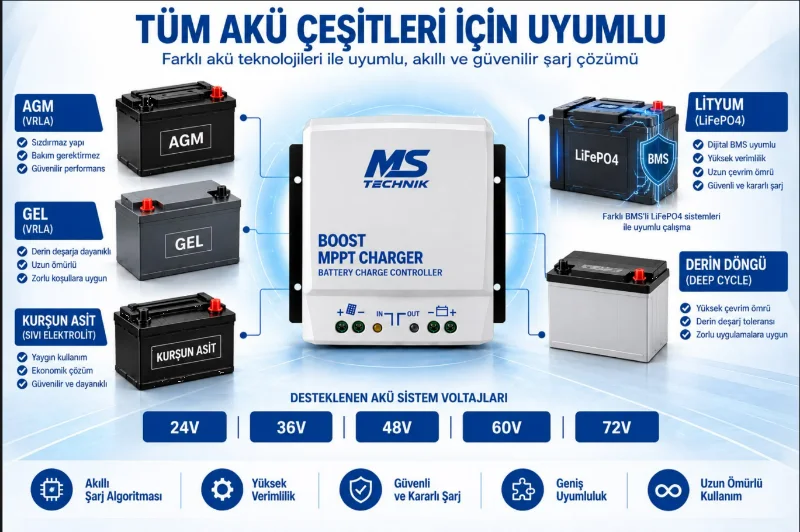

Her akü tipine uyumlu
AGM, jel, sulu kurşun-asit ve lityum (LiFePO₄) paketleri desteklenir; şarj parametreleri akü üreticisinin değerlerine göre programlanır.
Golf araçlarına, otel ve site hizmet araçlarına, elektrikli yük ve platform araçlarına güneş paneli dönüşümü. Panelden gelen enerji, MS Technik BOOST MPPT Charger üzerinden lityum akü paketinize aktarılır — araç park hâlindeyken bile şarj olur, prize bağlı geçen süre kısalır.

Elektrikli araçlar sessiz ve temiz; ama menzil bittiğinde hâlâ bir prize bağlanmak gerekiyor. Araç üstüne yerleştirilen güneş paneli ve BOOST MPPT Charger ikilisi bu bağımlılığı azaltır: araç dışarıda durduğu her saat üretim yapar, akü paketi gün boyu beslenir.
Zincir basittir: güneş üretir, kontrol cihazı yönetir, akü depolar, araç kullanır.
Aracın tavanına ya da üst platformuna yerleştirilen panel, gün boyu doğru akım üretir.
Panel gerilimini akü paketinin seviyesine yükseltir; MPPT algoritmasıyla o anki ışıkta çekilebilecek en yüksek gücü çeker.
Şarj akımı, akü paketine kontrollü biçimde aktarılır. Ayarlar paketin değerlerine göre programlanır.
Araç aynı akü paketinden beslenmeye devam eder; şebekeden şarj ihtiyacı azalır.
Sistemin kalbindeki şarj kontrol cihazı. Küçük görsellere dokunarak açıyı değiştirin, büyütmek için görsele tıklayın.


Güneş panelinden aracınızın lityum akü paketine doğrudan şarj. Cihazı tek başına da satın alabilirsiniz; panel ve akü ürüne dahil değildir, aracınıza uygun panel gücünü ücretsiz keşifte birlikte belirliyoruz.
₺7.300 ≈ $154
KDV dahil fiyattır.
💰 Havale/EFT ile: ₺6.550
AGM, jel, sulu kurşun-asit ve lityum (LiFePO₄) paketleri desteklenir; şarj parametreleri akü üreticisinin değerlerine göre programlanır.
Şarj parametreleri telefondan ayarlanır, sistemin durumu aynı yerden izlenir.
24 / 36 / 48 / 60 / 72 V akü gruplarıyla çalışır; aracınızın etiket değerine göre yapılandırılır.
Değerler üreticinin (MS Teknik) teknik bülteninden alınmıştır. Panel gücü ve kablo kesiti aracınıza göre belirlenir; kesin proje değerleri ücretsiz keşif sonrası teklifte yazılı olarak verilir.
| Ürün | BOOST MPPT 24-72 V — Bluetooth programlanabilir solar şarj kontrol cihazı |
| Marka | MS Teknik |
| Şarj tipi | MPPT — yükseltici (boost) dönüştürücü |
| Solar panel giriş gerilimi | 15–60 V DC |
| Desteklenen akü sistemleri | 24 / 36 / 48 / 60 / 72 V |
| Akü profilleri | AGM (VRLA) · GEL (VRLA) · sulu kurşun-asit · lityum (LiFePO₄) · kullanıcı profili |
| Sürekli çıkış akımı | 15 A |
| Kısa devre çıkış akımı | 20 A |
| Çıkış voltaj toleransı | ±0,2 V |
| Çıkış gürültüsü | 10 mV RMS |
| Yüksüz giriş akımı | < 80 mA |
| Çalışma sıcaklığı | −20 °C … +55 °C |
| Bağıl nem | Maks. %95, yoğuşmasız |
| Koruma sınıfı | IP22 |
| DC bağlantısı | Vidalı terminaller — maks. 10 mm² kablo kesiti |
| Boyutlar | 16 × 15,5 × 6,5 cm (G × U × D) |
| Programlama / izleme | Bluetooth — harici ekran yoktur |
| Garanti | 2 yıl |
| Üretim | Türkiye |
| Nominal sistem | Sürekli çıkış gücü | Verimlilik |
|---|---|---|
| 36 V | 540 W | %95 |
| 48 V | 720 W | %95,5 |
| 60 V | 900 W | %95,5 |
| 72 V | 1080 W | %98 |
24 V akü sistemi de desteklenir; üreticinin bülteninde 24 V için sürekli çıkış gücü değeri ayrıca belirtilmemiştir.
Cihaz yalnız lityumla sınırlı değildir: AGM, jel ve sulu kurşun-asit paketleri de desteklenir. Kullanıcı profiliyle şarj parametreleri akü üreticisinin önerdiği değerlere göre programlanabilir.

Yeni modelde harici ekran yoktur; çalışma değerleri ve şarj parametreleri telefondan Bluetooth ile yönetilir. Bağlantının sürekli açık kalması gerekmez — cihaz kayıtlı son ayarlarla bağımsız çalışmaya devam eder.
Panel seçiminden kablo kesitine, kontrol cihazının konumundan akü bağlantısına kadar kurulumun tamamı ekibimizce yapılır. Araç üzerindeki mevcut elektrik tesisatına müdahale edilmeden önce sistem şeması çıkarılır.
Gün içinde açık alanda duran ve lityum akü paketiyle çalışan elektrikli araçlar bu dönüşümden en çok faydayı görür.
Otel, tatil köyü ve golf sahalarında gün boyu açık alanda kalan araçlar — panel için ideal koşul.
Bagaj, temizlik ve bakım ekiplerinin kullandığı elektrikli araçlarda vardiya arası şarj beklemesini azaltır.
Sera, fidanlık ve büyük bahçelerde şebekeden uzakta çalışan elektrikli araçlar için pratik çözüm.
Katkı, panel gücüne ve günlük güneşlenmeye bağlıdır. Araç tavanına sığan bir panel, akü paketini tek başına sıfırdan doldurmaktan çok gün boyu destek verir: şebekeden çekilen şarjı azaltır ve araç park hâlindeyken aküyü dolu tutar. Aracınızın akü kapasitesine göre gerçekçi katkıyı keşifte birlikte hesaplıyoruz.
Evet. Cihaz AGM (VRLA), jel (VRLA), sulu kurşun-asit ve lityum (LiFePO₄) paketlerini destekler; kullanıcı profiliyle şarj parametreleri akü üreticisinin önerdiği değerlere göre programlanır. Yanlış şarj profili akü ömrünü kısaltacağı için akü tipini ve etiket değerlerini kurulumdan önce birlikte netleştiriyoruz.
Cihaz 24, 36, 48, 60 ve 72 V akü sistemleriyle uyumludur; solar panel giriş gerilimi 15–60 V DC aralığındadır. Bu değerlerin dışındaki sistemlerde farklı bir çözüm gerekir — aracınızın etiket değerlerini paylaşırsanız uygun donanımı birlikte belirleriz.
Şarj parametreleri telefondan programlanabilir ve sistemin durumu izlenebilir. Kurulumda ayarları aracınızın akü paketine göre biz yapıyoruz; sonrasında dilerseniz üretimi ve şarj durumunu kendiniz takip edebilirsiniz.
Panel ışık aldığı sürece üretim yapar; sistem hem park hâlinde hem hareket hâlinde çalışır. En verimli üretim, aracın gölgesiz ve açık alanda kaldığı saatlerde gerçekleşir.
Araç üreticisinin garanti koşulları markadan markaya değişir. Kurulum öncesinde aracınızın garanti durumunu birlikte değerlendiriyoruz; sizinle netleştirmeden işlem yapmıyoruz.
Aracınızın akü gerilimi ve tavan alanı üzerinden ücretsiz değerlendirme yapalım.